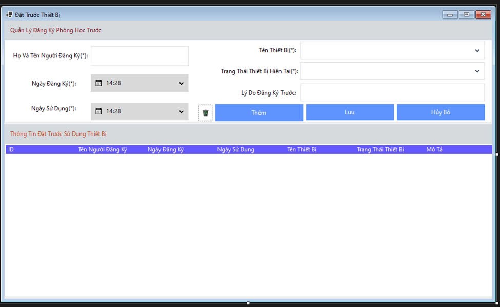

Hướng dẫn sử dụng màn hình Đặt Trước Thiết Bị.

Bước 1: Xác định được thiết bị cần tìm trong phần tên thiết bị.
Bước 2: Hệ thống sẽ hiển thị trạng thái của thiết bị đó chỉ có các thiết bị "Có thể sử dụng" mới có thể đặt trước được.
Bước 3: Hoàn thành các thủ tục nhập đủ các thông tin.
Bước 4: Hệ thống sẽ tự động kiểm tra lại các thông tin và sẽ hiển thị thông báo đặt trước thiết bị thành công cho người dùng
Bước 1: Tìm hiểu các thiết bị có thể đăng ký trước.
Bước 2: Sau khi chọn nút thêm form sẽ làm sạch các thông tin trước đó để bạn nhập vào dữ liệu.
Bước 1: Sau khi đã điền đầy đủ các thông tin cần phải lưu ý những ô thông tin tránh tình trạng báo lỗi
Bước 2: Sau khi ấn nút lưu thông tin kiêm kê sẽ được hiển thị ở phần bảng phía dưới và gửi thông báo đã được thành công.
Tác Dụng: Load lại form quản lý đăng ký khi bạn lỡ điền sai hoặc cho thông tin sai để làm lại.
Tác Dụng:Khi sử dụng lâu hệ thống sẽ có rất nhiều dữ liệu chúng ta nên xóa bớt hoặc là có những đơn lỗi sẽ xóa để tránh ảnh hưởng tới các người dùng khác.